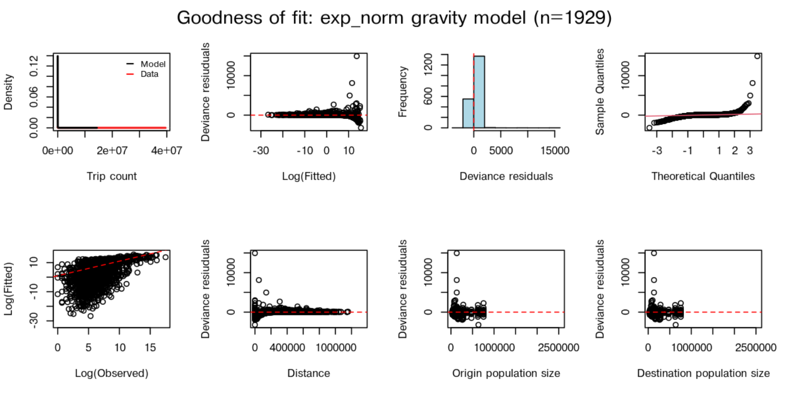
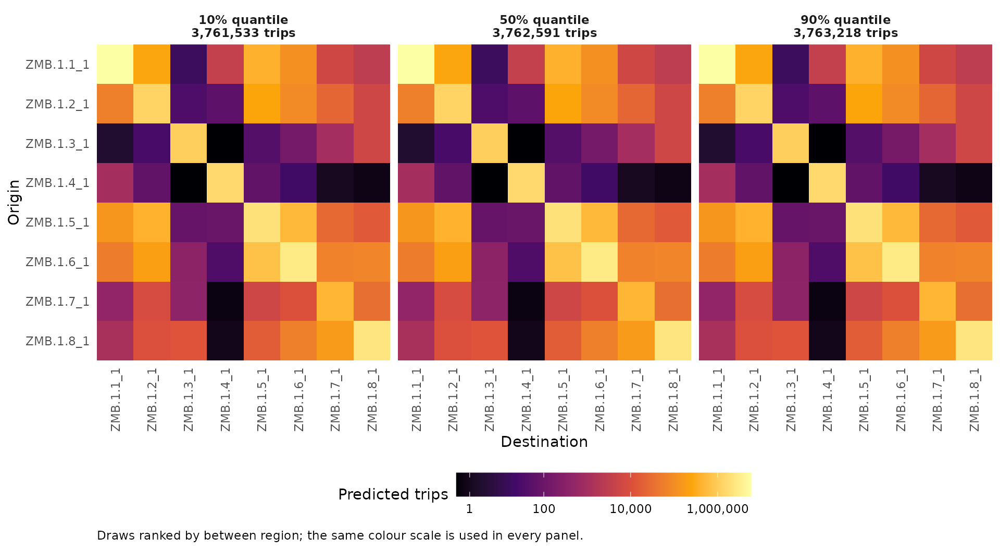
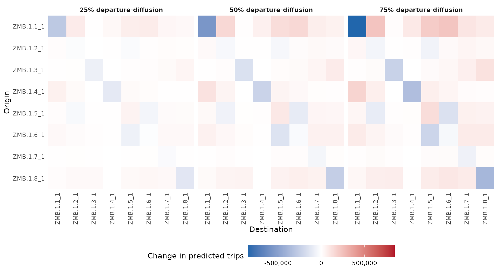

Selecting a mobility model
selecting-a-model.RmdOnce we have prepared a set of regions for an analysis, we still need to decide which mobility model to use. Several models may be available for a country, and a model that fit its original data well may behave quite differently when applied to new populations and distances. This vignette works through those choices using the Zambia Facebook models, from inspecting their source data to comparing predictions and combining them in an ensemble.
All the examples use data included with nomad, so you
can follow them without access to the private trip matrices used for
fitting. Longer setup and plotting blocks are folded below their
descriptions. Prediction warnings are also kept in expandable panels
beside the relevant result, where you can read how our example differs
from the fitted setting.
Find a relevant source
Let’s start by looking at the datasets available for Zambia. Finding data from the country of interest is useful, but we also need to consider whose movement was recorded and at what spatial scale. For example, journeys between large administrative areas may have a different relationship with distance from journeys between small urban neighbourhoods. The source metadata help us identify these differences before we compare the fitted models.
The table below includes whether each dataset has fitted models
available. Entries with has_fitted_models = FALSE describe
data in the catalogue for which we do not yet have models to use for
prediction.
mobility_table(country = "ZMB")[, c(
"name", "aggregation", "has_fitted_models", "prediction_period_days", "distance_unit"
)]#> # A tibble: 3 × 5
#> name aggregation has_fitted_models prediction_period_days distance_unit
#> <chr> <chr> <lgl> <dbl> <chr>
#> 1 zmb_cdr_20… admin_2 TRUE NA m
#> 2 zmb_fb_2020 admin_2 TRUE NA km
#> 3 zmb_fb_2025 admin_2 TRUE 21 mWe will use zmb_fb_2025 for the comparison below. Its
predictions represent trip counts over 21 days. This period is separate
from the start and end dates over which the observations were collected.
Averaging a series of matrices retains the 21-day period represented by
each matrix, rather than making the counts refer to the whole collection
window.
Datasets and models can be shared through nomad even
when some of their source metadata are unavailable. For example, the
earlier Zambia Facebook and CDR models from 2020 do not include a
prediction period. Their predicted patterns of movement can still be
explored, but we cannot interpret the counts as trips per day or convert
them to a chosen duration. Looking at metadata completeness therefore
helps us decide which models can support the analysis we have in
mind.
Compare fits to the same observations
Several model families were fit to these observations. We can
retrieve them with model_table() and compare their root
mean squared error (RMSE), which summarises the differences between
fitted and observed flows. A lower RMSE means that the model reproduced
these particular observations more closely. This is a useful first
comparison, although it does not establish how well that model will
predict movement elsewhere. The table also tells us whether each family
supports prediction for new regions, which we will need later in the
example.
candidates <- model_table(data_name = "zmb_fb_2025")
knitr::kable(candidates[, c("model_type", "mobility_model", "RMSE", "max_rhat", "supports_newdata")],
digits = 2, col.names = c("Type", "Family", "RMSE", "Maximum R-hat", "New regions"))| Type | Family | RMSE | Maximum R-hat | New regions |
|---|---|---|---|---|
| exp | departure-diffusion | 946017.6 | 1.01 | TRUE |
| power | departure-diffusion | 946520.7 | 1.01 | TRUE |
| radiation | departure-diffusion | 946972.8 | 1.01 | TRUE |
| basic | gravity | 819787889.5 | 1.00 | TRUE |
| exp | gravity | 947086.4 | 1.05 | TRUE |
| exp_norm | gravity | 965441.9 | 1.01 | TRUE |
| power | gravity | 942100.3 | 1.55 | TRUE |
| power_norm | gravity | 946881.4 | 1.00 | TRUE |
| scaled_power | gravity | 952655.1 | 1.03 | TRUE |
| transport | gravity | 1057907.1 | 1.00 | TRUE |
| basic | radiation | 831655.6 | NA | FALSE |
| finite | radiation | 833481.7 | NA | FALSE |
Before choosing the model with the smallest error, it is also useful
to look at max_rhat. R-hat compares variation within and
between the chains used to fit the model. A high value raises a concern
that the chains have not converged, so the reported parameter estimates
need further review even if the fit error is small. The package
preserves the supplied fits and flags values above 1.1 through
rhat_above_1_1. You can inspect individual parameters with
summary(model); being below the flag threshold does not by
itself establish that a fit is reliable.
We can use the available RMSE values to calculate a set of model weights. The chosen statistic needs to be available for every model in the comparison. For example, the deviance information criterion (DIC) was not calculated for these fits, so we cannot use it to derive their weights.
These fit-based weights are most interpretable when the models were
fit to the same observations. Across different datasets, differences in
trip counts, spatial aggregation and sampling can change the scale of
the errors. Combining those errors would then mix differences in the
data with differences in model performance. For this reason,
model_weights() requires the models to share a source
dataset. If we want to compare models from different sources, we can
choose manual weights and examine how our results change across those
choices, making clear that the weights describe a sensitivity
analysis.
weights <- model_weights(data_name = "zmb_fb_2025", metric = "RMSE")
knitr::kable(weights[, c("name", "RMSE", "weight")], digits = c(0, 1, 3))| name | RMSE | weight |
|---|---|---|
| zmb_fb_2025_mod_dd_exp | 946017.6 | 0.090 |
| zmb_fb_2025_mod_dd_power | 946520.7 | 0.090 |
| zmb_fb_2025_mod_dd_radiation | 946972.8 | 0.090 |
| zmb_fb_2025_mod_grav_basic | 819787889.5 | 0.000 |
| zmb_fb_2025_mod_grav_exp | 947086.4 | 0.090 |
| zmb_fb_2025_mod_grav_exp_norm | 965441.9 | 0.088 |
| zmb_fb_2025_mod_grav_power | 942100.3 | 0.090 |
| zmb_fb_2025_mod_grav_power_norm | 946881.4 | 0.090 |
| zmb_fb_2025_mod_grav_scaled_power | 952655.1 | 0.089 |
| zmb_fb_2025_mod_grav_transport | 1057907.1 | 0.080 |
| zmb_fb_2025_mod_rad_basic | 831655.6 | 0.102 |
| zmb_fb_2025_mod_rad_finite | 833481.7 | 0.102 |
For these fits, the RMSE weights are proportional to the inverse error and normalised to sum to one. A model with half the error of another therefore receives twice its weight. This summarises relative fit to the Zambia observations, but does not tell us how similar our prediction setting is to the source setting or give a probability that each model is correct. We will therefore inspect the models and their predictions before deciding how to combine them.
Inspect the source and diagnostics
For the rest of this example we will compare normalised exponential
gravity with exponential departure-diffusion, both fit to
zmb_fb_2025. Each has a stored maximum R-hat of 1.01 and
minimum effective sample sizes above 600. The effective sample size
accounts for similarity between successive draws, so it can be much
smaller than the number of samples stored. These summaries help us
choose examples with more reassuring sampling diagnostics, although a
full convergence assessment would also require inspecting the chains
themselves.
We can use model_profile() to see the distance units,
population scale and prediction period associated with a model. The
saved fit checks then let us compare its predictions with the original
observations, even though the private trip matrix itself is not
distributed with the package.
gravity <- model_db$zmb_fb_2025_mod_grav_exp_norm
departure <- model_db$zmb_fb_2025_mod_dd_exp
model_profile(gravity)#> # A tibble: 1 × 27
#> name data_name country aggregation date_start date_end source_duration_days
#> <chr> <chr> <chr> <chr> <date> <date> <dbl>
#> 1 zmb_… zmb_fb_2… ZMB admin_2 2024-07-29 2025-06-16 21
#> # ℹ 20 more variables: prediction_period_days <dbl>, distance_unit <chr>,
#> # supports_newdata <lgl>, supports_stochastic_draws <lgl>, n_origin <int>,
#> # n_dest <int>, distance_min <dbl>, distance_q25 <dbl>,
#> # distance_median <dbl>, distance_q75 <dbl>, distance_max <dbl>,
#> # population_total <dbl>, population_min <dbl>, population_median <dbl>,
#> # population_max <dbl>, max_rhat <dbl>, min_n_eff <dbl>,
#> # rhat_above_1_1 <lgl>, has_mobility_data <lgl>, has_saved_check <lgl>
check(gravity, plots = FALSE)#> $DIC
#> [1] NA
#>
#> $RMSE
#> [1] 965441.9
#>
#> $MAPE
#> [1] 32.18002
#>
#> $R2
#> [1] 0.1056686
plot(gravity)
In the observed-versus-predicted panel, flows near the line of agreement are those the model reproduces closely. Look for groups of flows that are consistently overpredicted or underpredicted, and for patterns in the residual panel. For example, a model might fit the largest flows reasonably well while missing many small ones, which could matter when studying movement into less connected areas.
These checks describe the source fit. Before using it for our own regions, we also need to check whether their distances and populations are comparable, and whether the model can accept the inputs we want to provide. The next step sets up a small prediction request so we can work through those checks.
Prepare a common prediction setting
To keep the matrices small enough to inspect, we will use eight
regions from the distances and populations used for fitting. The
distance matrix D has origins in its rows and destinations
in its columns, while N gives the population of each
region. We keep the region names on both inputs so that
nomad can match the populations to the correct rows and
columns. For your own analysis, these would be the distances and
population estimates prepared for your study regions.
source <- gravity$get_model()$data
regions <- rownames(source$D)[1:8]
newdata <- list(
D = source$D[regions, regions],
N = source$N_orig[regions]
)The source distances are measured in metres, so we supply
unit = "m" when predicting. This tells nomad
how to interpret our input distances. It can then convert them to the
units used by each fitted model, which is particularly useful when
comparing models whose original data used different units.
Although we have kept the source populations for these eight regions, we have removed the remaining regions from the prediction setting. The warnings about fewer regions and a smaller total population draw attention to this change. For a model that distributes movement across the available destinations, removing destinations can change the remaining flows. These predictions therefore describe a new, smaller setting; they should not be treated as simply extracting eight rows and columns from a prediction for the full source population.
a <- predict(gravity, newdata = newdata, unit = "m", duration = 21)
b <- predict(departure, newdata = newdata, unit = "m", duration = 21)
round(a[1:4, 1:4])#> destination
#> origin ZMB.1.1_1 ZMB.1.2_1 ZMB.1.3_1 ZMB.1.4_1
#> ZMB.1.1_1 5822213 268155 15 3706
#> ZMB.1.2_1 60209 1307265 31 57
#> ZMB.1.3_1 3 27 1101759 0
#> ZMB.1.4_1 995 68 0 1562487Show prediction warnings
#> Warning: ! Prediction data have far fewer regions than the fitted source data.
#> ℹ `newdata` has "8" regions; the fitted model has "115".
#> • Predictions may be coarser than the source data can support.#> Warning: ! Prediction population is much smaller than the fitted source population.
#> ℹ `newdata` population: "1538603"; fitted model source population: "18296043".
#> • Check that this model is suitable for the population scale being predicted.#> Warning: ! Prediction data have far fewer regions than the fitted source data.
#> ℹ `newdata` has "8" regions; the fitted model has "115".
#> • Predictions may be coarser than the source data can support.
#> ! Prediction population is much smaller than the fitted source population.
#> ℹ `newdata` population: "1538603"; fitted model source population: "18296043".
#> • Check that this model is suitable for the population scale being predicted.Each entry is a predicted trip count from its row region to its column region over 21 days. The counts can include repeated trips by the same person. If we requested 42 days, the package would double these values, assuming the same average daily trip rate throughout. That conversion cannot describe seasonal changes or changes in travel behaviour.
This conversion depends on having a source prediction period. For
models shared without that information, leaving duration
unset returns the unscaled prediction with a warning. Requesting a
conversion instead raises an error, since the package cannot calculate
the multiplier. Such a model may still help us explore relative
movement, but we would need the missing metadata before using its
predictions as trip counts over a specified period.
Recognise unsupported requests
Basic and finite radiation models retain predictions for their exact
original regions and populations. They cannot transfer the stored matrix
to the eight-region subset above. nomad rejects that
request directly, including through an ensemble, and explains how to
choose a model that supports new regions or recalculate radiation with
mobility when you have the necessary trip totals. For the
original regions, we can retrieve the stored prediction without
supplying new inputs, as below.
#> [1] 115 115For model families that support new inputs, a different country,
spatial scale or population may still be a valid prediction request. The
warnings identify those differences so that we can consider whether
transferring the fitted parameters is reasonable. Country checks require
locations, supplied as an sf object or a
longitude/latitude table, because distances alone do not locate the
regions geographically. None of the bundled models was fit to
international travel, so a prediction between countries would require
assumptions beyond what those source data can establish.
Inspect uncertainty
The predictions above use the mean estimates of the fitted
parameters. To explore how the stored parameter uncertainty affects the
predicted flows, we can request 100 simulations with
nsim = 100. For a model that supports these simulations,
the result is an array containing one mobility matrix per draw. We can
then use uncertainty_summary() to look at quantities such
as the total number of trips and the number travelling between different
regions.
The current mobility predictor samples each parameter
independently from a normal distribution truncated at zero, using its
stored mean and standard deviation. The draws therefore approximate the
uncertainty in each parameter separately. They do not preserve
relationships between parameters in the original Markov chain Monte
Carlo (MCMC) samples. These predictions also leave out observation
noise, uncertainty in populations or distances, and uncertainty about
applying the model in another setting.
draws <- predict(gravity, newdata = newdata, unit = "m", nsim = 100, seed = 42)
uncertainty_summary(draws, metrics = c("total", "between_region", "max"))#> # A tibble: 9 × 3
#> metric prob value
#> <chr> <dbl> <dbl>
#> 1 total 0.025 21374078.
#> 2 total 0.5 21377435.
#> 3 total 0.975 21380787.
#> 4 between_region 0.025 3760995.
#> 5 between_region 0.5 3762604.
#> 6 between_region 0.975 3763534.
#> 7 max 0.025 5821286.
#> 8 max 0.5 5822177.
#> 9 max 0.975 5823186.
selected <- uncertainty_matrices(draws, metric = "between_region", probs = c(0.1, 0.5, 0.9))
attr(selected, "selected")#> # A tibble: 3 × 4
#> name prob simulation value
#> <chr> <dbl> <int> <dbl>
#> 1 q0.1 0.1 71 3761533.
#> 2 q0.5 0.5 46 3762591.
#> 3 q0.9 0.9 54 3763218.Show prediction warnings
#> Warning: ! Prediction data have far fewer regions than the fitted source data.
#> ℹ `newdata` has "8" regions; the fitted model has "115".
#> • Predictions may be coarser than the source data can support.#> Warning: ! Prediction population is much smaller than the fitted source population.
#> ℹ `newdata` population: "1538603"; fitted model source population: "18296043".
#> • Check that this model is suitable for the population scale being predicted.To visualise the variation, we select draws near the 10th, 50th and 90th percentiles of between-region movement. Each selected matrix comes from one complete draw, preserving the pattern of flows that its parameters produced. Taking a separate quantile in every cell could instead assemble a matrix that was never predicted by any one parameter draw. If we ranked by a different quantity, such as the largest individual flow, we might select different matrices.
The three heatmaps use a common colour scale so that a given colour means the same number of trips in each panel. The scale uses log(1 + trips), allowing both large and small flows, including zeros, to remain visible.
plot_uncertainty(draws, metric = "between_region", probs = c(0.1, 0.5, 0.9))
The small difference between these panels is present in the supplied fit. We can check its parameter summaries and quantify the spread in between-region trips:
parameter_summary <- gravity$get_model()$summary[, c("mean", "sd")]
parameter_summary#> mean sd
#> delta 2.897039e+04 2.454642e+00
#> omega 3.129614e-07 3.045025e-07
#> theta 1.389407e+01 1.247901e-03
between <- mobility_metrics(draws)$between_region
interval <- stats::quantile(between, c(0.1, 0.5, 0.9))
relative_width <- 100 * (interval[3] - interval[1]) / interval[2]For these 100 draws, the 10th-to-90th percentile interval is only
0.045% of the median between-region trip total. The movement-rate
parameter theta and distance parameter delta
have very small stored standard deviations relative to their means. In
this normalised gravity model, total trips are
theta * sum(N), which also constrains variation in the
total. The destination-population exponent omega is close
to zero, so destination population contributes little to differences
between flows in this fit.
The narrow spread therefore reflects the stored parameter summaries
and the prediction method for this particular fitted model. It would be
misleading to interpret it as the full uncertainty about travel in these
regions, since it omits the other sources described above. Increasing
nsim would estimate the same approximate distribution more
precisely, but would not account for those missing sources. To
investigate uncertainty about model choice, we can instead compare the
predictions from different plausible models, as in the next section.
Compare and combine predictions
We now have two predictions for the same target regions and period,
so we can compare their entries directly. Using gravity as the baseline,
a positive value from prediction_difference(b, a) means
that departure-diffusion predicts more trips for that origin-destination
pair. The function matches region names if their order differs, and
raises an error if the matrices refer to different sets of target
regions.
We can also combine the two models in an ensemble. The example below gives 60% of the weight to gravity and 40% to departure-diffusion, then compares the total predicted trips with those from each component.
round(prediction_difference(b, a)[1:4, 1:4])#> destination
#> origin ZMB.1.1_1 ZMB.1.2_1 ZMB.1.3_1 ZMB.1.4_1
#> ZMB.1.1_1 -1128508 307408 15413 114280
#> ZMB.1.2_1 44364 -67050 6347 7896
#> ZMB.1.3_1 9617 21863 -314477 634
#> ZMB.1.4_1 225565 83989 1951 -452055
ensemble <- nomad_ensemble(list(gravity = gravity, departure = departure),
weights = c(gravity = 0.6, departure = 0.4))
combined <- predict(ensemble, newdata = newdata, unit = "m", duration = 21)#> gravity departure ensemble
#> 21377461 21763957 21532059Show prediction warnings
#> Warning: ! Prediction data have far fewer regions than the fitted source data.
#> ℹ `newdata` has "8" regions; the fitted model has "115".
#> • Predictions may be coarser than the source data can support.#> Warning: ! Prediction population is much smaller than the fitted source population.
#> ℹ `newdata` population: "1538603"; fitted model source population: "18296043".
#> • Check that this model is suitable for the population scale being predicted.#> Warning: ! Prediction data have far fewer regions than the fitted source data.
#> ℹ `newdata` has "8" regions; the fitted model has "115".
#> • Predictions may be coarser than the source data can support.#> Warning: ! Prediction population is much smaller than the fitted source population.
#> ℹ `newdata` population: "1538603"; fitted model source population: "18296043".
#> • Check that this model is suitable for the population scale being predicted.Here the weights are choices we have made for the example. We could give the models equal influence or calculate fit-based weights for these two models, provided we are satisfied that their fit statistics are an appropriate basis for the comparison. The weights calculated earlier included every model for the dataset, so we would need to restrict that calculation to the components we intend to combine.
To see how those choices affect individual flows, compare three fixed weights against the gravity prediction. Each panel below shows ensemble minus gravity: red cells mean more trips than gravity predicts, blue cells mean fewer, and white means no change. Rows are origins and columns are destinations, including trips that stay within the same region on the diagonal.
All panels use the same colour limits, centred on zero. The weights
are illustrative sensitivity choices, not estimates of which model is
correct. With two fixed component matrices, the difference is
weight * (departure - gravity), so the pattern stays the
same while its magnitude changes. Here weight is the share
given to departure-diffusion.
Show how to compare fixed ensemble weights
weights <- c(0.25, 0.5, 0.75)
differences <- lapply(weights, function(weight) {
candidate <- nomad_ensemble(list(gravity = gravity, departure = departure),
weights = c(gravity = 1 - weight, departure = weight))
prediction <- predict(candidate, newdata = newdata, unit = "m", duration = 21)
cells <- as.data.frame(as.table(prediction_difference(prediction, a)))
names(cells) <- c("origin", "destination", "difference")
cells$weight <- paste0(100 * weight, "% departure-diffusion")
cells
})
changes <- do.call(rbind, differences)
changes$origin <- factor(changes$origin, levels = rev(rownames(a)))
changes$destination <- factor(changes$destination, levels = colnames(a))
limit <- max(abs(changes$difference))
ggplot2::ggplot(changes, ggplot2::aes(destination, origin, fill = difference)) +
ggplot2::geom_tile() +
ggplot2::facet_wrap(~weight, nrow = 1) +
ggplot2::scale_fill_gradient2(
low = "#2166ac", mid = "white", high = "#b2182b",
midpoint = 0, limits = c(-limit, limit),
labels = function(x) format(x, big.mark = ",", scientific = FALSE, trim = TRUE)
) +
ggplot2::scale_x_discrete(expand = c(0, 0)) +
ggplot2::scale_y_discrete(expand = c(0, 0)) +
ggplot2::labs(x = "Destination", y = "Origin", fill = "Change in predicted trips") +
ggplot2::theme_minimal(base_size = 11) +
ggplot2::theme(
panel.grid = ggplot2::element_blank(),
axis.text.x = ggplot2::element_text(angle = 90, hjust = 1, vjust = 0.5),
strip.text = ggplot2::element_text(face = "bold"),
legend.position = "bottom",
legend.key.width = grid::unit(1.5, "cm")
)
Show prediction warnings
#> Warning: ! Prediction data have far fewer regions than the fitted source data.
#> ℹ `newdata` has "8" regions; the fitted model has "115".
#> • Predictions may be coarser than the source data can support.#> Warning: ! Prediction population is much smaller than the fitted source population.
#> ℹ `newdata` population: "1538603"; fitted model source population: "18296043".
#> • Check that this model is suitable for the population scale being predicted.#> Warning: ! Prediction data have far fewer regions than the fitted source data.
#> ℹ `newdata` has "8" regions; the fitted model has "115".
#> • Predictions may be coarser than the source data can support.#> Warning: ! Prediction population is much smaller than the fitted source population.
#> ℹ `newdata` population: "1538603"; fitted model source population: "18296043".
#> • Check that this model is suitable for the population scale being predicted.#> Warning: ! Prediction data have far fewer regions than the fitted source data.
#> ℹ `newdata` has "8" regions; the fitted model has "115".
#> • Predictions may be coarser than the source data can support.#> Warning: ! Prediction population is much smaller than the fitted source population.
#> ℹ `newdata` population: "1538603"; fitted model source population: "18296043".
#> • Check that this model is suitable for the population scale being predicted.#> Warning: ! Prediction data have far fewer regions than the fitted source data.
#> ℹ `newdata` has "8" regions; the fitted model has "115".
#> • Predictions may be coarser than the source data can support.#> Warning: ! Prediction population is much smaller than the fitted source population.
#> ℹ `newdata` population: "1538603"; fitted model source population: "18296043".
#> • Check that this model is suitable for the population scale being predicted.#> Warning: ! Prediction data have far fewer regions than the fitted source data.
#> ℹ `newdata` has "8" regions; the fitted model has "115".
#> • Predictions may be coarser than the source data can support.#> Warning: ! Prediction population is much smaller than the fitted source population.
#> ℹ `newdata` population: "1538603"; fitted model source population: "18296043".
#> • Check that this model is suitable for the population scale being predicted.#> Warning: ! Prediction data have far fewer regions than the fitted source data.
#> ℹ `newdata` has "8" regions; the fitted model has "115".
#> • Predictions may be coarser than the source data can support.#> Warning: ! Prediction population is much smaller than the fitted source population.
#> ℹ `newdata` population: "1538603"; fitted model source population: "18296043".
#> • Check that this model is suitable for the population scale being predicted.The heatmaps show which flows are most affected by changing the ensemble weights. Whether those differences matter will depend on what we use the mobility matrix for. For example, a modest difference in travel to a less connected region might change when an outbreak reaches it, even if the total number of trips changes very little. The outbreak example takes this next step by comparing daily incidence under several mobility assumptions while keeping the transmission parameters fixed.